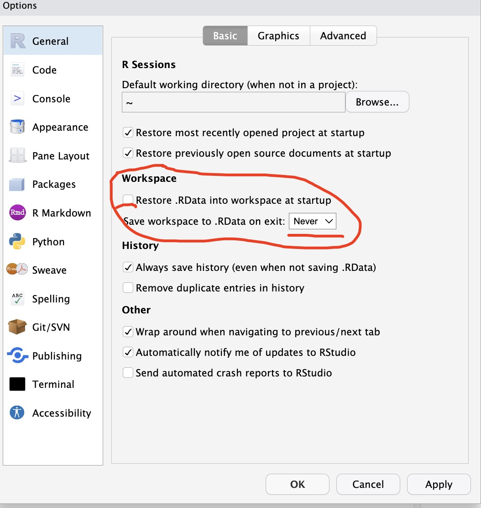

1 提高Quarto效率的常见配置
Quarto是基于Pandoc的开源科技出版系统，我们可以利用Quarto把常规文本以及基于不同语言的数据分析过程（R、Python等）混合格式转化为静态网页、PDF、WORD文档、网站以及其他更多的格式。我也写过一篇博文介绍了如何利用Quarto提高科技论文效率，今天在这个段落介绍一下提高Quarto撰写效率的方法。
1.1 利用snippets自动插入Divs和Spans
Quarto支持利用Divs和Spans来给特定的内容增加一些属性。比如，我们可以给一段话增加边框，语句如下：
具体显示效果如下：
这是具有边框样式的一段话。
我们也可以使用一些内置的callout样式，语法如下：
具体显示效果如下：
Warning
这是一段warning类型callout段落的显示效果。
但是我们在实际使用的时候，每次录入3个”:“开头，然后紧接着是”{}“内表明具体的属性名称，最后以3个”:“结尾，这么多的字符输入很浪费时间，但是我们可以通过在Rstudio里设置snippets片段的方式来提高输入效率，snippets是自动插入代码比较好的一种方式，使我们能够比较快地在quarto文档里插入相应的代码片段。
下面是一些quarto文本中常用的一些snippet片段，我们可以在Rstudio里通过依次点击Tools > Global Options > Code > Edit Code Snippets，在出现的界面中选择Markdown选项卡，然后把下面的代码片段插入到最后。
snippet fragment
[${1:text}]{.${2:type}}
snippet aside
[${1:text}]{.aside}
snippet fence
:::{.${1:type}}
${2:body}
:::
snippet panel
::: {.panel-tabset}
${1:body}
:::
snippet column
:::: {.columns}
::: {.column width="50%"}
Left column
:::
::: {.column width="50%"}
Right column
:::
::::我们在在使用的时候，在Quarto文档里输入snippet名称，然后按Shift+Tab键就可以按照设定的片段录入代码了。比如，我们可以将将内容进行分栏，可以录入column，然后按Shift+Tab键，然后相应的代码块会自动填充。
1.2 善于使用echo: fenced选项
Quarto支持插入代码块从而实现一些相应的功能，而我们在利用Quarto进行写作时，有时需要把代码显示出来，从而让其他人知道相应的部分的内容的原始代码是什么样的，而在代码块的echo选项设定为fenced之后，可以把包括选项部分的设置一块显示出来。
在没有这是 echo: fenced时，代码块的显示是下面这样的。
设置echo: fenced之后，代码块的显示是这样的：
1.3 利用shortcode方便地插入内容
通常我们可以在quarto文档中添加HTML内容，比如通过添加视频内容等，shortcode可以使我们很方便地插入我们想插入的内容。Quarto原生支持一些shortcode，比如运行下面的代码。
显示的内容如下：
这篇博客的标题是提高Rstudio和Quarto使用效率的一些方法和配置。
1.4 在不同文档间重复利用内容
{{< include >}}是一个quarto的shortcode使我们能够重复利用不同quarto文档的内容，而不用复制和粘贴。在你想插入内容的地方，添加shortcode {{< include >}} include后面放入想添加的文档名称，记得在名称前添加下划线。
也可以按照一定的条件纳入内容，比如，只在渲染为特定格式时显示内容，用.content-visible 或者 .content-hidden
2 善于使用快捷键
我们在使用Rstudio在进行统计分析时，有些使用频率非常高的操作，比如添加或者取消注释、赋值号、管道操作符、运行当前行代码、运行有所代码，从代码界面切换到Console界面，切换到Terminal界面等等，如果记住一些键盘快捷键将会大大提高操作效率，就不用在写着代码的时候到桌面上找鼠标了。下面的表格中列出了我比较常用的键盘快捷键，我们在使用的时候可以参考借鉴。
我们在数据分析的过程中也要保持良好的习惯，比如记得添加代码注释，通过添加注释可以使我们的代码具有更高的可读性，使代码更易于维护，帮助我们更好的理解代码的含义。
| 编号 | 操作 | MAC OS | Linux 或者Windows |
|---|---|---|---|
| 1 | 添加或者取消代码注释 | Command + Shift + C | Control + Shift + C |
| 2 | 插入赋值号 <- | Option + - | Alt + - |
| 3 | 插入管道操作符 %>% | Command + Shift + M | Ctrl + Shift + M |
| 4 | 运行目前行代码 | Command + Enter | Control + Enter |
| 5 | 运行所有代码 | Command + A + Enter | Control + A + Enter |
| 6 | 查看Rstudio快捷键 | Option + Shift + K | Alt + Shift + K |
| 7 | 切换到代码编辑界面 | Ctrl + 1 | Ctrl + 1 |
| 8 | 切换到Console界面 | Ctrl + 2 | Ctrl + 2 |
| 9 | 切换到Terminal界面 | Option + Shift + M | Alt + Shift + M |
| 10 | quarto文档插入代码块 | Option + Comman + I |
记住快捷键的小技巧
一下子记住所有的快捷键肯定是有困难的，但是，我们在日常使用的时候一定要想着使用快捷键，这样即使使用的当时没有记住，但是我们通过每次的查询和使用，不出几天肯定都能熟练的记住了。
3 不要保存工作环境变量
尽量不要保存Rstudio工作环境，如果您创建了值得保存的 R 对象，请将生成该对象的 R 代码保存到一个 R 脚本文件中。保存 R 脚本，但不要保存对象生成时的环境或工作空间。
为防止 RStudio 保存您的工作空间，请打开”首选项 > 通用”并取消选择将 .RData 在启动时恢复到工作空间的选项。请确保指定您永不想保存工作空间，如下所示：
4 用项目(Projects)组织管理工作
如果我们使用Rstudio进行数据分析时，一定要有项目的概念，当我们处理多个分析时，时常需要在多个分析之间来回切换，使用了项目的概念之后，我们各个分析会更有组织性。
Rstudio项目
RStudio Project是一个以特定目录作为根目录的工作环境，其中包含R代码、数据、图片、说明文件、结果输出等多个文件。这个根目录还包括一个用于管理项目的.Rproj文件。
通过创建RStudio Project，您可以将所有相关文件组织在一个目录中，使得在进行多个分析或项目时更加方便、清晰和高效。此外，RStudio Project还提供了许多其他有用的功能，例如：
- 能够在项目之间快速切换，而无需重新打开各个文件
- 为每个项目分配单独的工作空间，从而避免命名空间冲突
- 将项目文件和支持文件打包，便于与他人共享和合作
- 可以使用renv等工具来管理项目依赖项，以确保在不同计算机上运行项目时的一致性。
通过导航到 RStudio 中的”文件”选项卡并选择”新建项目”来创建新项目。您可以选择在新目录或现有目录中创建新项目。
但是，如果您想实现无缝协作，可能需要将软件包管理引入工作流程。幸运的是，RStudio 提供了一个有用的软件包管理工具 renv，现在与 RStudio Projects 兼容。
5 利用renv管理R包的版本
因为R语言的开源使用，越来越多的数据科学家使用R语言来进行了数据分析和数据管理，近年来有大量的R包被上传到CRAN上，这大大方便了我们使用R语言进行数据分析，同时也加大了我们R包管理的难度。
使用renv来管理R包版本是一种有效的方式，以确保在不同计算机上运行R代码时的一致性和可重复性。以下是使用renv管理R包版本的步骤：
在RStudio中打开您的项目，并在终端中安装renv包。可以使用以下命令：install.packages(“renv”)
在RStudio的控制台或终端中，输入以下命令，以初始化renv项目：renv::init()
在项目的根目录中创建一个名为”renv.lock”的文件，该文件用于跟踪项目的包依赖项。可以使用以下命令创建该文件：renv::snapshot()
在R代码中使用renv来管理R包版本。例如，使用以下命令安装特定版本的tidyverse包：renv::install(“tidyverse@1.3.1”)
在renv项目中更新或添加新的R包时，使用以下命令将这些更改保存到”renv.lock”文件中：renv::snapshot()
当您要在另一个计算机上运行该项目时，只需将整个项目目录复制到该计算机上，并使用以下命令恢复项目的环境：renv::restore()
通过使用renv管理R包版本，您可以确保您的项目在不同计算机上具有相同的R包版本，从而使得您的分析结果更加可靠和可重复。
6 配置R和Rstudio启动文件
在启动Rstudio和R时，软件会自动寻找几个文件，这些文件分别为.Rprofile, .Renviron, Rprofile.site, Renviron.site, rsession.conf 和 repos.conf，可以通过这些文件设置一些选项和环境变量。这一部分将介绍如何在R启动时设置特定选项。
下面一个表格总结了如何在启动时控制R选项和环境变量。
| Id | 文件 | 需要权限 | 级别 | 限制 |
|---|---|---|---|---|
| 1 | .Rprofile | 用户或管理员 | 用户或项目 | 没有，运行R代码 |
| 2 | .Renviron | 用户或管理员 | 用户或项目 | 只能设置环境变量 |
| 3 | Rprofile.site | 管理员 | R版本 | 没有，运行R代码 |
| 4 | Renviron.site | 管理员 | R版本 | 只能设置环境变量 |
| 5 | rsession.conf | 管理员 | 服务器 | 只能配置Rstudio设置，只能设置一个存储库 |
| 6 | repos.conf |
管理员 | 服务器 | 只能设置存储库 |
6.1 .Rprofile
.Rprofile文件是用户可控的文件，用于设置选项和环境变量。.Rprofile文件可以是用户级别或项目级别。用户级别的.Rprofile文件位于用户主目录的根目录中，项目级别的.Rprofile文件位于项目目录的根目录中。
R只会使用一个.Rprofile文件。因此，如果您既有一个特定于项目的.Rprofile文件，又有一个用户.Rprofile文件需要使用，则必须在项目级.Rprofile的顶部显式调用用户级.Rprofile，使用source(“~/.Rprofile”)。
.Rprofile文件作为常规的R代码进行调用，因此设置环境变量必须在Sys.setenv(key = “value”)调用内完成。
编辑.Rprofile文件的一种简单方法是在R会话中使用usethis::edit_r_profile()函数。您可以指定要编辑的用户或项目级.Rprofile。
6.2 .Renviron
.Renviron是一个可由用户控制的文件，可用于创建环境变量。这对于避免在R脚本中包含凭据（如API密钥）特别有用。该文件采用键值格式编写，因此环境变量的创建格式为：
Key1=value1 Key2=value2 ... 然后，在R会话中使用Sys.getenv(“Key1”)将返回”value1”。
与.Rprofile文件一样，.Renviron文件可以是用户级别或项目级别。如果有项目级别的.Renviron文件，则不会加载用户级别的文件。usethis包中包含一个帮助函数，可以使用usethis::edit_r_environ()从R会话中编辑.Renviron文件。
6.3 Rprofile.site 和Renviron.site
.Rprofile和.Renviron文件都有服务器范围内的等效文件。Rprofile.site和Renviron.site（没有前导点）文件由RStudio Workbench或RStudio Server上的管理员管理，并且特定于特定版本的R。这些文件的最常见设置涉及对软件包存储库的访问。例如，通常使用共享基线软件包管理策略是从Rprofile.site中完成的。
用户可以使用其个人.Rprofile文件覆盖这些文件中的设置。
这些文件针对每个版本的R进行设置，应位于R_HOME / etc /中。您可以通过在该版本的R会话中运行命令R.home（component =“home”）来找到R_HOME。因此，例如，如果您发现R_HOME是/opt/R/3.6.2/lib/R，则R 3.6.2的Rprofile.site将位于/opt/R/3.6.2/lib/R/etc/Rprofile.site中。
6.4 rsession.conf和repos.conf
RStudio Workbench和RStudio Server允许服务器管理员通过rsession.conf和repos.conf文件配置特定的服务器范围内的R包存储库。rsession.conf中只能配置一个存储库。如果需要多个存储库，应该使用repos.conf。